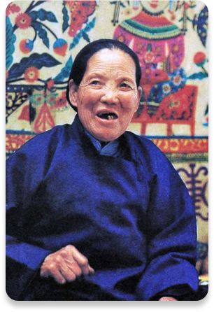

Ku Shulan
Basic Information
- Year of birth: 1924-2004
- Nationality: Han
- Sex: Female
- Native place: Fucun Village, Equator Township, Xunyi County, Xianyang, Shaanxi
Ku Shulan, female, born in 1924, born in 2004 in Fucun Vill- age,Equator Township, Xunyi County, Xianyang, Shaanxi Provi- nce, isone of the outstanding representatives of Chinese fo- lk paper-cut art, a master of Chinese folk arts and crafts, and is known as the "Lady of Cutting Flowers". Ku Shulan was born in a poor peasant family. At the age of six, he began to learn paper-cutting and painting with his mother. Its pa- per-cut style is bold in composition, full in characters and bright in color, which soon attracted the attention of the art world. Her art paper-cut has also been in Xi'an Artists Gallery,The National Art Museum of China and the Exhibition Hall of the Central Academy of Fine Arts. In 1996, she was awarded the title of "Outstanding Master of Folk Art" by U- NESCO, the first Chinese to receive this title. Color repr- esented by Ku Shulan Paper-cut has been listed in the natio- nal intangible cultural heritage protection list. Paper-cut style introduction:Ku Shulan paper-cut has innovated on the basis of inheriting the tradition-al folk paper-cut art. She does not rigidly adhere to the traditional paper-cutting te- chniques and uses a variety of bright colors.The unique com- position and layout create a new paper-cut art. And make full use of the characteristics of image narrative. The inherent information content and emotional characteristics make it mo- re narrative through the ingenious design of color, shape and composition. Paper-cut works continue to stretch from small p- ictures, intuitively telling every little story, viewers can feel the life of Guanzhong, into Ku Shulan. Inside. In the hands of Ku Shulan, paper isno longer ordinary, it connects local life and ancient culture, and express-es Ku Shulan's deep feelings and inner beliefs.